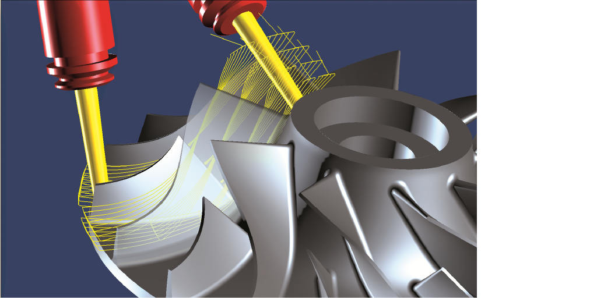
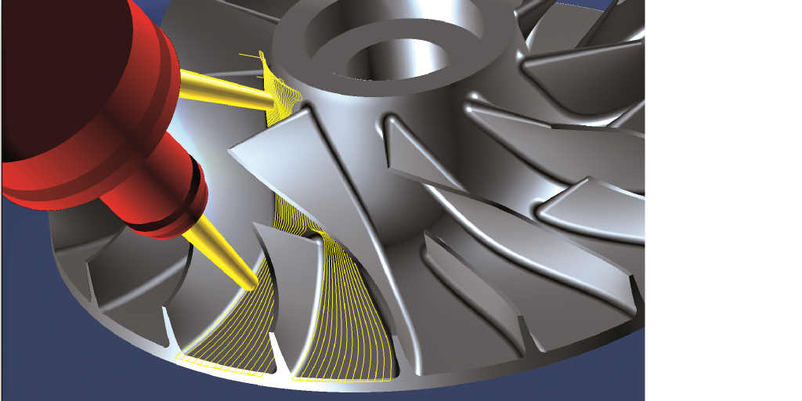
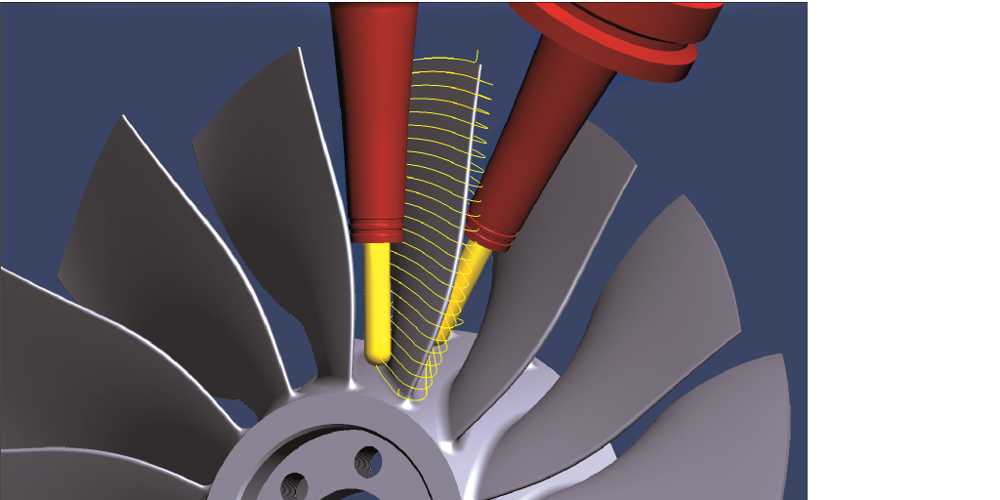
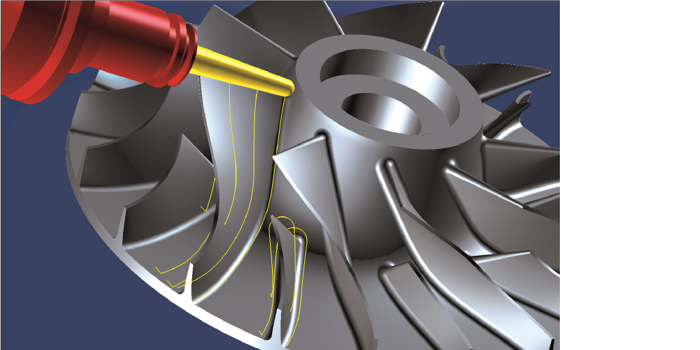
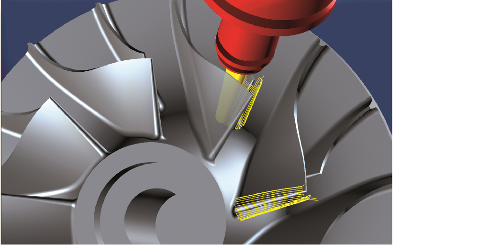
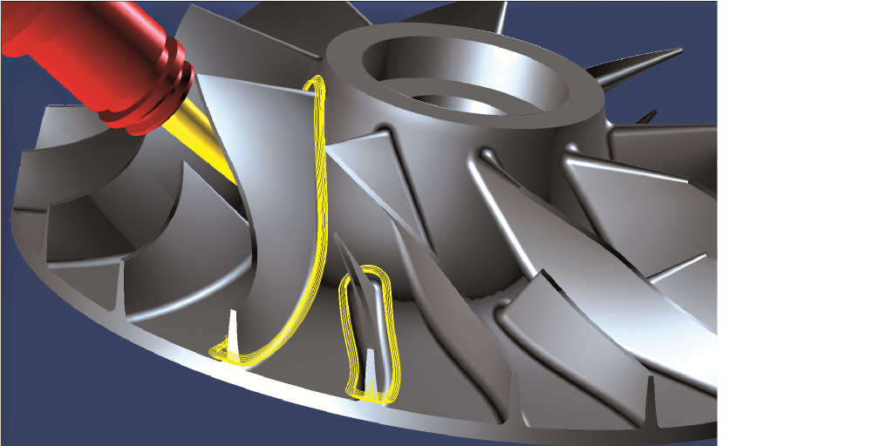

11.7. Multiblade Milling
Overview of cycles
The package contains the following cycles:
-
5X MB Roughing
-
5X MB Hub Finishing
-
5X MB Point Milling
-
5X MB Flank Milling
-
5X MB Edge Milling
-
5X MB Fillet Milling
-
5X MB Tangent Machining
Roughing
Starting with a pre-turned stock or semi-finished part, this cycle roughs the pockets between individual blades.
|  |
Bottom machining
This cycle offers complete or partial finishing of bottom surfaces.
|  |
Point milling
Spiral, circumferential machining of blade surfaces using point contact. You should use this cycle if the blade surfaces are twisted double so severely that it is not possible to perform flank milling or to use this high speed cutting (HSC) technology on ruled surface components instead of flank milling for any kind of reason.
|  |
Flank milling
Circumferential, swarf cut machining of blade surfaces. Preferably for use when tool sufficiently fits to surface curvature. This cycle offers shorter machining times compared to point milling.
|  |
MB Edge Milling
Leading and trailing edges are milled separately.
Edge milling is required if it was not possible to machine this geometry together with the flow areas during flank milling.
|  |
Fillet Milling
This milling strategy can be used to mill the fillets between the blade and bottom surfaces.
Fillet milling is used to generate variable fillets or remove remaining rest material. This makes using larger tools to mill blade and hub surfaces more effective.
|  |